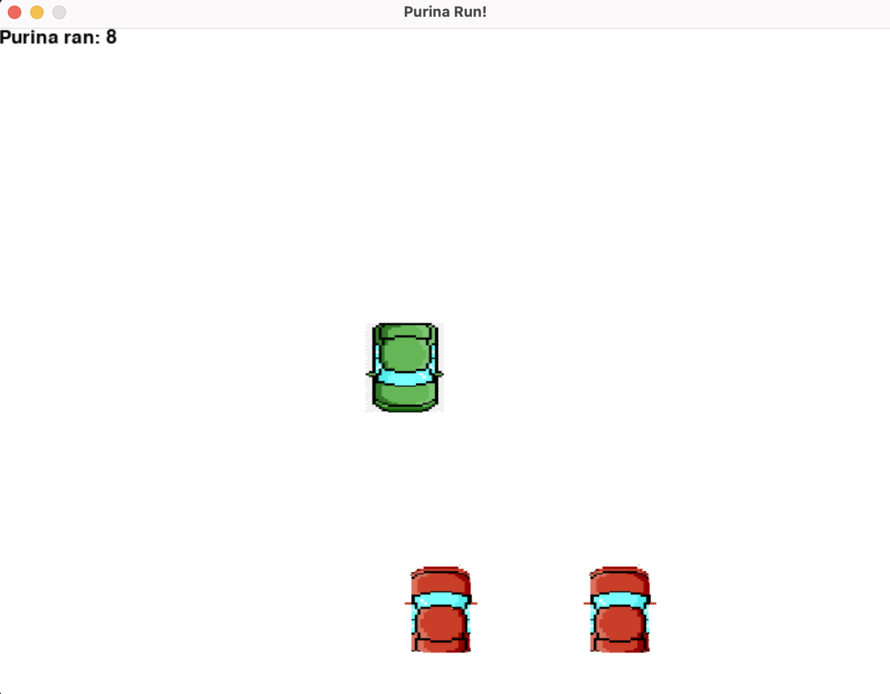
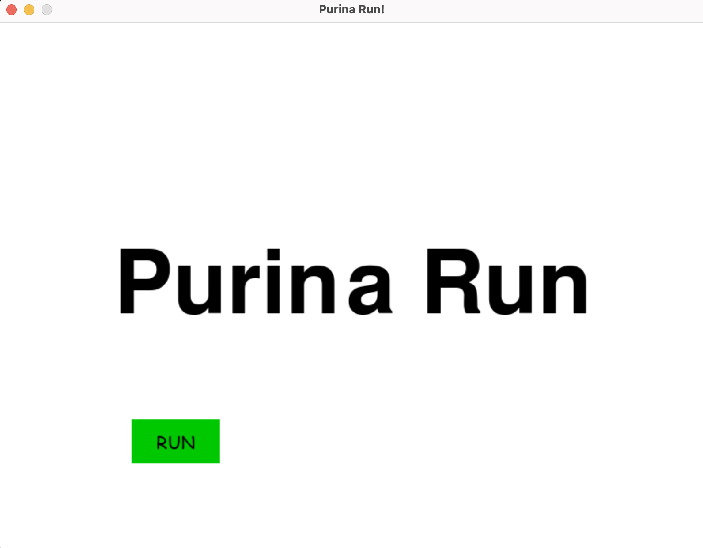

Purina Run


Purina Run - игра, написанная на языке программирования Python с использованием библиотеки pygame. Придусмотрена на двух игроков. Правая машинка управляется стрелками, левая - клавишами A и D.